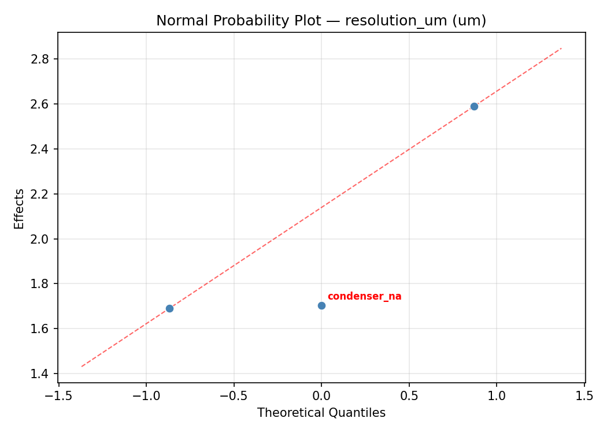
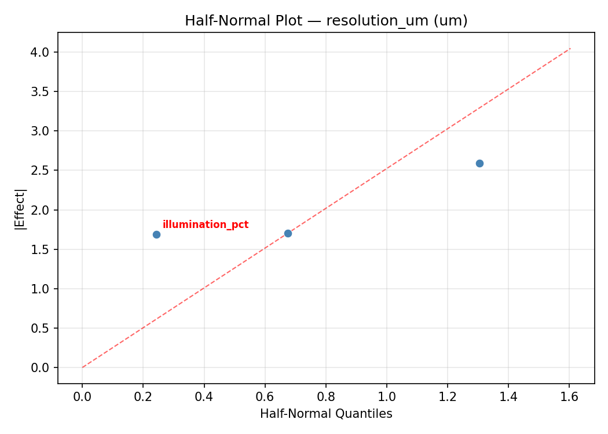
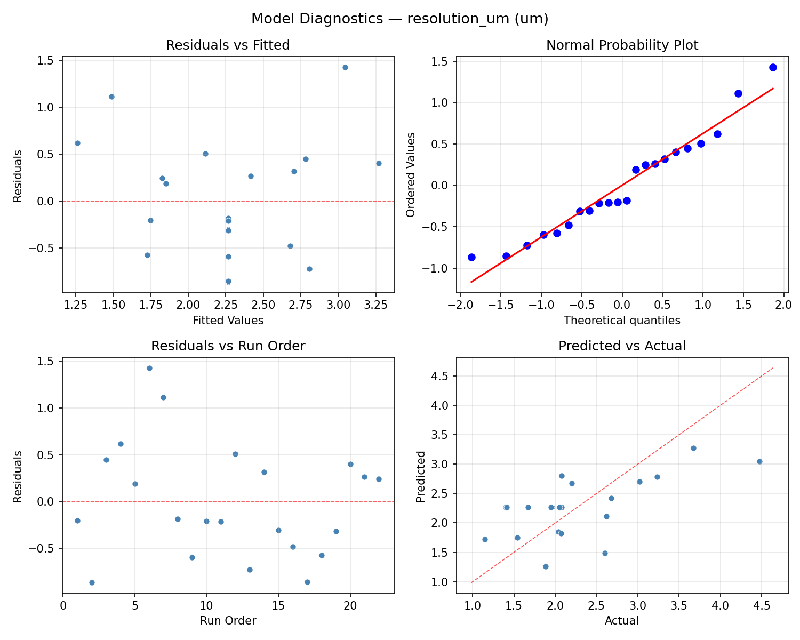
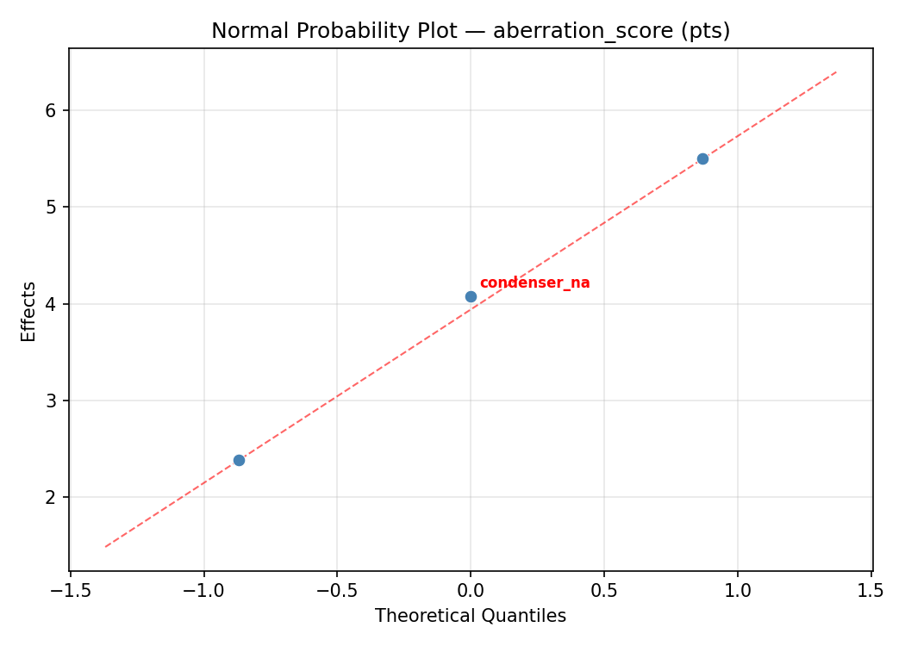
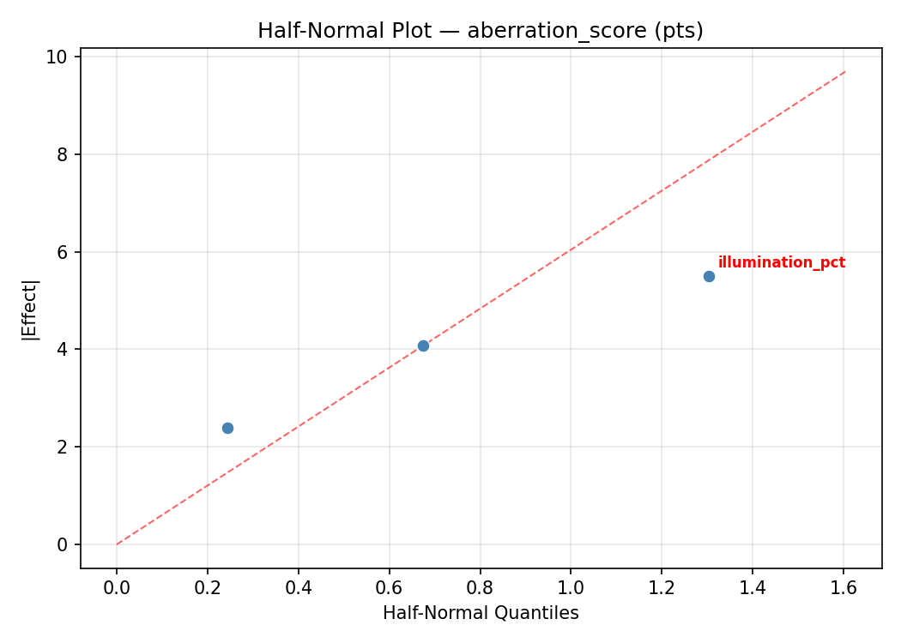
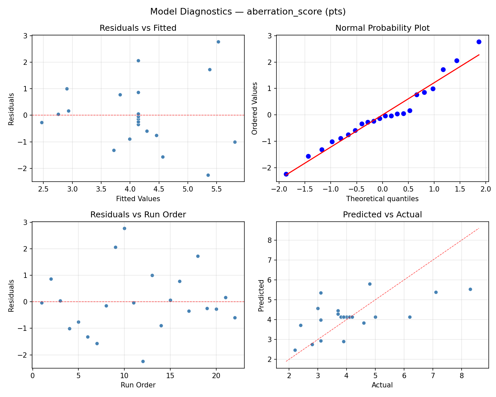

Summary
This experiment investigates microscope imaging quality. Central composite design to maximize resolution and minimize chromatic aberration by tuning objective magnification, illumination intensity, and condenser aperture.
The design varies 3 factors: magnification (x), ranging from 10 to 100, illumination pct (%), ranging from 20 to 100, and condenser na (NA), ranging from 0.2 to 0.9. The goal is to optimize 2 responses: resolution um (um) (minimize) and aberration score (pts) (minimize). Fixed conditions held constant across all runs include specimen = stained_tissue, camera = cmos_sensor.
A Central Composite Design (CCD) was selected to fit a full quadratic response surface model, including curvature and interaction effects. With 3 factors this produces 22 runs including center points and axial (star) points that extend beyond the factorial range.
Quadratic response surface models were fitted to capture potential curvature and factor interactions. The RSM contour plots below visualize how pairs of factors jointly affect each response.
Key Findings
For resolution um, the most influential factors were magnification (54.3%), illumination pct (28.5%), condenser na (17.1%). The best observed value was 1.15 (at magnification = 10, illumination pct = 20, condenser na = 0.9).
For aberration score, the most influential factors were magnification (60.7%), illumination pct (20.0%), condenser na (19.3%). The best observed value was 2.2 (at magnification = 55, illumination pct = 60, condenser na = 0.55).
Recommended Next Steps
- Run confirmation experiments at the predicted optimal settings to validate the model.
- Consider whether any fixed factors should be varied in a future study.
Experimental Setup
Factors
| Factor | Low | High | Unit |
|---|
magnification | 10 | 100 | x |
illumination_pct | 20 | 100 | % |
condenser_na | 0.2 | 0.9 | NA |
Fixed: specimen = stained_tissue, camera = cmos_sensor
Responses
| Response | Direction | Unit |
|---|
resolution_um | ↓ minimize | um |
aberration_score | ↓ minimize | pts |
Configuration
{
"metadata": {
"name": "Microscope Imaging Quality",
"description": "Central composite design to maximize resolution and minimize chromatic aberration by tuning objective magnification, illumination intensity, and condenser aperture"
},
"factors": [
{
"name": "magnification",
"levels": [
"10",
"100"
],
"type": "continuous",
"unit": "x"
},
{
"name": "illumination_pct",
"levels": [
"20",
"100"
],
"type": "continuous",
"unit": "%"
},
{
"name": "condenser_na",
"levels": [
"0.2",
"0.9"
],
"type": "continuous",
"unit": "NA"
}
],
"fixed_factors": {
"specimen": "stained_tissue",
"camera": "cmos_sensor"
},
"responses": [
{
"name": "resolution_um",
"optimize": "minimize",
"unit": "um"
},
{
"name": "aberration_score",
"optimize": "minimize",
"unit": "pts"
}
],
"settings": {
"operation": "central_composite",
"test_script": "use_cases/151_microscope_imaging/sim.sh"
}
}
Experimental Matrix
The Central Composite Design produces 22 runs. Each row is one experiment with specific factor settings.
| Run | magnification | illumination_pct | condenser_na |
|---|
| 1 | 55 | 60 | 0.55 |
| 2 | 100 | 20 | 0.9 |
| 3 | 10 | 100 | 0.2 |
| 4 | 55 | 133.03 | 0.55 |
| 5 | 55 | 60 | 0.55 |
| 6 | -27.1584 | 60 | 0.55 |
| 7 | 55 | 60 | -0.0890097 |
| 8 | 55 | 60 | 0.55 |
| 9 | 100 | 100 | 0.2 |
| 10 | 137.158 | 60 | 0.55 |
| 11 | 55 | 60 | 0.55 |
| 12 | 55 | -13.0297 | 0.55 |
| 13 | 55 | 60 | 0.55 |
| 14 | 10 | 20 | 0.9 |
| 15 | 55 | 60 | 0.55 |
| 16 | 100 | 20 | 0.2 |
| 17 | 55 | 60 | 1.18901 |
| 18 | 100 | 100 | 0.9 |
| 19 | 55 | 60 | 0.55 |
| 20 | 10 | 20 | 0.2 |
| 21 | 10 | 100 | 0.9 |
| 22 | 55 | 60 | 0.55 |
Step-by-Step Workflow
1
Preview the design
$ python doe.py info --config use_cases/151_microscope_imaging/config.json
2
Generate the runner script
$ python doe.py generate --config use_cases/151_microscope_imaging/config.json \
--output use_cases/151_microscope_imaging/results/run.sh --seed 42
3
Execute the experiments
$ bash use_cases/151_microscope_imaging/results/run.sh
4
Analyze results
$ python doe.py analyze --config use_cases/151_microscope_imaging/config.json
5
Get optimization recommendations
$ python doe.py optimize --config use_cases/151_microscope_imaging/config.json
6
Multi-objective optimization
With 2 competing responses, use --multi to find the best compromise via Derringer–Suich desirability.
$ python doe.py optimize --config use_cases/151_microscope_imaging/config.json --multi
7
Generate the HTML report
$ python doe.py report --config use_cases/151_microscope_imaging/config.json \
--output use_cases/151_microscope_imaging/results/report.html
Features Exercised
| Feature | Value |
|---|
| Design type | central_composite |
| Factor types | continuous (all 3) |
| Arg style | double-dash |
| Responses | 2 (resolution_um ↓, aberration_score ↓) |
| Total runs | 22 |
Analysis Results
Generated from actual experiment runs using the DOE Helper Tool.
Response: resolution_um
Top factors: magnification (54.3%), illumination_pct (28.5%), condenser_na (17.1%).
ANOVA
| Source | DF | SS | MS | F | p-value |
|---|
| Source | DF | SS | MS | F | p-value |
| magnification | 4 | 4.1866 | 1.0466 | 3.277 | 0.0643 |
| illumination_pct | 4 | 2.4890 | 0.6223 | 1.948 | 0.1865 |
| condenser_na | 4 | 0.6385 | 0.1596 | 0.500 | 0.7372 |
| Lack | of | Fit | 2 | 3.3901 | 1.6950 |
| Pure | Error | 7 | 2.2358 | | |
| Error | 9 | 5.6259 | 0.3194 | | |
| Total | 21 | 12.9399 | 0.6162 | | |
Pareto Chart

Main Effects Plot

Normal Probability Plot of Effects

Half-Normal Plot of Effects

Model Diagnostics

Response: aberration_score
Top factors: magnification (60.7%), illumination_pct (20.0%), condenser_na (19.3%).
ANOVA
| Source | DF | SS | MS | F | p-value |
|---|
| Source | DF | SS | MS | F | p-value |
| magnification | 4 | 18.3057 | 4.5764 | 3.856 | 0.0430 |
| illumination_pct | 4 | 6.6190 | 1.6548 | 1.394 | 0.3108 |
| condenser_na | 4 | 2.6865 | 0.6716 | 0.566 | 0.6939 |
| Lack | of | Fit | 2 | 9.5532 | 4.7766 |
| Pure | Error | 7 | 8.3087 | | |
| Error | 9 | 17.8620 | 1.1870 | | |
| Total | 21 | 45.4732 | 2.1654 | | |
Pareto Chart

Main Effects Plot

Normal Probability Plot of Effects

Half-Normal Plot of Effects

Model Diagnostics

Response Surface Plots
3D surfaces fitted with quadratic RSM. Red dots are observed data points.
aberration score illumination pct vs condenser na

aberration score magnification vs condenser na

aberration score magnification vs illumination pct

resolution um illumination pct vs condenser na

resolution um magnification vs condenser na

resolution um magnification vs illumination pct

Multi-Objective Optimization
When responses compete, Derringer–Suich desirability finds the best compromise.
Each response is scaled to a 0–1 desirability, then combined via a weighted geometric mean.
Overall Desirability
D = 0.7788
Per-Response Desirability
| Response | Weight | Desirability | Predicted | Dir |
|---|
resolution_um |
1.0 |
|
1.41 0.8834 1.41 um |
↓ |
aberration_score |
1.5 |
|
3.80 0.7161 3.80 pts |
↓ |
Recommended Settings
| Factor | Value |
|---|
magnification | 55 x |
illumination_pct | 60 % |
condenser_na | 0.55 NA |
Source: from observed run #17
Trade-off Summary
Sacrifice = how much worse than single-objective best.
| Response | Predicted | Best Observed | Sacrifice |
|---|
aberration_score | 3.80 | 2.20 | +1.60 |
Top 3 Runs by Desirability
| Run | D | Factor Settings |
|---|
| #5 | 0.7229 | magnification=100, illumination_pct=20, condenser_na=0.2 |
| #22 | 0.7195 | magnification=10, illumination_pct=20, condenser_na=0.9 |
Model Quality
| Response | R² | Type |
|---|
aberration_score | 0.2484 | linear |
Full Multi-Objective Output
============================================================
MULTI-OBJECTIVE OPTIMIZATION
Method: Derringer-Suich Desirability Function
============================================================
Overall desirability: D = 0.7788
Response Weight Desirability Predicted Direction
---------------------------------------------------------------------
resolution_um 1.0 0.8834 1.41 um ↓
aberration_score 1.5 0.7161 3.80 pts ↓
Recommended settings:
magnification = 55 x
illumination_pct = 60 %
condenser_na = 0.55 NA
(from observed run #17)
Trade-off summary:
resolution_um: 1.41 (best observed: 1.15, sacrifice: +0.26)
aberration_score: 3.80 (best observed: 2.20, sacrifice: +1.60)
Model quality:
resolution_um: R² = 0.2431 (linear)
aberration_score: R² = 0.2484 (linear)
Top 3 observed runs by overall desirability:
1. Run #17 (D=0.7788): magnification=55, illumination_pct=60, condenser_na=0.55
2. Run #5 (D=0.7229): magnification=100, illumination_pct=20, condenser_na=0.2
3. Run #22 (D=0.7195): magnification=10, illumination_pct=20, condenser_na=0.9
Full Analysis Output
=== Main Effects: resolution_um ===
Factor Effect Std Error % Contribution
--------------------------------------------------------------
magnification 1.8875 0.1674 54.3%
illumination_pct 0.9917 0.1674 28.5%
condenser_na 0.5950 0.1674 17.1%
=== ANOVA Table: resolution_um ===
Source DF SS MS F p-value
-----------------------------------------------------------------------------
magnification 4 4.1866 1.0466 3.277 0.0643
illumination_pct 4 2.4890 0.6223 1.948 0.1865
condenser_na 4 0.6385 0.1596 0.500 0.7372
Lack of Fit 2 3.3901 1.6950 5.307 0.0396
Pure Error 7 2.2358 0.3194
Error 9 5.6259 0.3194
Total 21 12.9399 0.6162
=== Summary Statistics: resolution_um ===
magnification:
Level N Mean Std Min Max
------------------------------------------------------------
-27.1584 1 1.1500 0.0000 1.1500 1.1500
10 4 3.0375 1.3282 1.4100 4.4700
100 4 1.9100 0.2536 1.5400 2.0800
137.158 1 2.0600 0.0000 2.0600 2.0600
55 12 2.2358 0.5451 1.4000 3.2300
illumination_pct:
Level N Mean Std Min Max
------------------------------------------------------------
-13.0297 1 3.0200 0.0000 3.0200 3.0200
100 4 2.1725 1.0383 1.4100 3.6700
133.03 1 2.6800 0.0000 2.6800 2.6800
20 4 2.7750 1.1644 1.9500 4.4700
60 12 2.0283 0.5351 1.1500 3.2300
condenser_na:
Level N Mean Std Min Max
------------------------------------------------------------
-0.0890097 1 1.8800 0.0000 1.8800 1.8800
0.2 4 2.4750 1.3606 1.4100 4.4700
0.55 12 2.1758 0.6233 1.1500 3.2300
0.9 4 2.4725 0.9081 1.5400 3.6700
1.18901 1 2.0500 0.0000 2.0500 2.0500
=== Main Effects: aberration_score ===
Factor Effect Std Error % Contribution
--------------------------------------------------------------
magnification 4.2500 0.3137 60.7%
illumination_pct 1.4000 0.3137 20.0%
condenser_na 1.3500 0.3137 19.3%
=== ANOVA Table: aberration_score ===
Source DF SS MS F p-value
-----------------------------------------------------------------------------
magnification 4 18.3057 4.5764 3.856 0.0430
illumination_pct 4 6.6190 1.6548 1.394 0.3108
condenser_na 4 2.6865 0.6716 0.566 0.6939
Lack of Fit 2 9.5532 4.7766 4.024 0.0686
Pure Error 7 8.3087 1.1870
Error 9 17.8620 1.1870
Total 21 45.4732 2.1654
=== Summary Statistics: aberration_score ===
magnification:
Level N Mean Std Min Max
------------------------------------------------------------
-27.1584 1 7.1000 0.0000 7.1000 7.1000
10 4 2.8500 0.7188 2.2000 3.8000
100 4 4.9750 2.2202 3.7000 8.3000
137.158 1 4.1000 0.0000 4.1000 4.1000
55 12 4.0500 0.9922 2.8000 6.2000
illumination_pct:
Level N Mean Std Min Max
------------------------------------------------------------
-13.0297 1 3.1000 0.0000 3.1000 3.1000
100 4 4.5000 2.6369 2.2000 8.3000
133.03 1 3.1000 0.0000 3.1000 3.1000
20 4 3.3250 0.7632 2.4000 4.0000
60 12 4.4667 1.2153 2.8000 7.1000
condenser_na:
Level N Mean Std Min Max
------------------------------------------------------------
-0.0890097 1 4.8000 0.0000 4.8000 4.8000
0.2 4 3.4500 0.7047 2.4000 3.9000
0.55 12 4.2417 1.3187 2.8000 7.1000
0.9 4 4.3750 2.7183 2.2000 8.3000
1.18901 1 4.1000 0.0000 4.1000 4.1000
Optimization Recommendations
=== Optimization: resolution_um ===
Direction: minimize
Best observed run: #18
magnification = 10
illumination_pct = 20
condenser_na = 0.9
Value: 1.15
RSM Model (linear, R² = 0.0888, Adj R² = -0.0630):
Coefficients:
intercept +2.2650
magnification +0.2127
illumination_pct -0.0793
condenser_na -0.1638
RSM Model (quadratic, R² = 0.6975, Adj R² = 0.4705):
Coefficients:
intercept +2.3374
magnification +0.2127
illumination_pct -0.0793
condenser_na -0.1638
magnification*illumination_pct +0.3925
magnification*condenser_na +0.6625
illumination_pct*condenser_na +0.5050
magnification^2 -0.0147
illumination_pct^2 +0.1038
condenser_na^2 -0.1977
Curvature analysis:
condenser_na coef=-0.1977 concave (has a maximum)
illumination_pct coef=+0.1038 convex (has a minimum)
magnification coef=-0.0147 negligible curvature
Notable interactions:
magnification*condenser_na coef=+0.6625 (synergistic)
illumination_pct*condenser_na coef=+0.5050 (synergistic)
magnification*illumination_pct coef=+0.3925 (synergistic)
Predicted optimum (from quadratic model, at observed points):
magnification = 10
illumination_pct = 20
condenser_na = 0.2
Predicted value: 3.8193
Surface optimum (via L-BFGS-B, quadratic model):
magnification = 10
illumination_pct = 53.6096
condenser_na = 0.9
Predicted value: 1.0833
Model quality: Moderate fit — use predictions directionally, not precisely.
Factor importance:
1. magnification (effect: 1.6, contribution: 50.8%)
2. condenser_na (effect: 1.1, contribution: 34.1%)
3. illumination_pct (effect: 0.5, contribution: 15.1%)
=== Optimization: aberration_score ===
Direction: minimize
Best observed run: #20
magnification = 55
illumination_pct = 60
condenser_na = 0.55
Value: 2.2
RSM Model (linear, R² = 0.0280, Adj R² = -0.1340):
Coefficients:
intercept +4.1409
magnification -0.2917
illumination_pct -0.0421
condenser_na -0.0023
RSM Model (quadratic, R² = 0.8134, Adj R² = 0.6734):
Coefficients:
intercept +3.6646
magnification -0.2917
illumination_pct -0.0421
condenser_na -0.0023
magnification*illumination_pct +0.0000
magnification*condenser_na -0.9250
illumination_pct*condenser_na -0.7500
magnification^2 -0.1018
illumination_pct^2 -0.2218
condenser_na^2 +1.0382
Curvature analysis:
condenser_na coef=+1.0382 convex (has a minimum)
illumination_pct coef=-0.2218 concave (has a maximum)
magnification coef=-0.1018 concave (has a maximum)
Notable interactions:
magnification*condenser_na coef=-0.9250 (antagonistic)
illumination_pct*condenser_na coef=-0.7500 (antagonistic)
Predicted optimum (from quadratic model, at observed points):
magnification = 55
illumination_pct = 60
condenser_na = -0.0890097
Predicted value: 7.1294
Surface optimum (via L-BFGS-B, quadratic model):
magnification = 100
illumination_pct = 100
condenser_na = 0.832743
Predicted value: 2.3296
Model quality: Good fit — general trends are captured, some noise remains.
Factor importance:
1. condenser_na (effect: 4.8, contribution: 62.0%)
2. magnification (effect: 1.5, contribution: 20.2%)
3. illumination_pct (effect: 1.4, contribution: 17.9%)